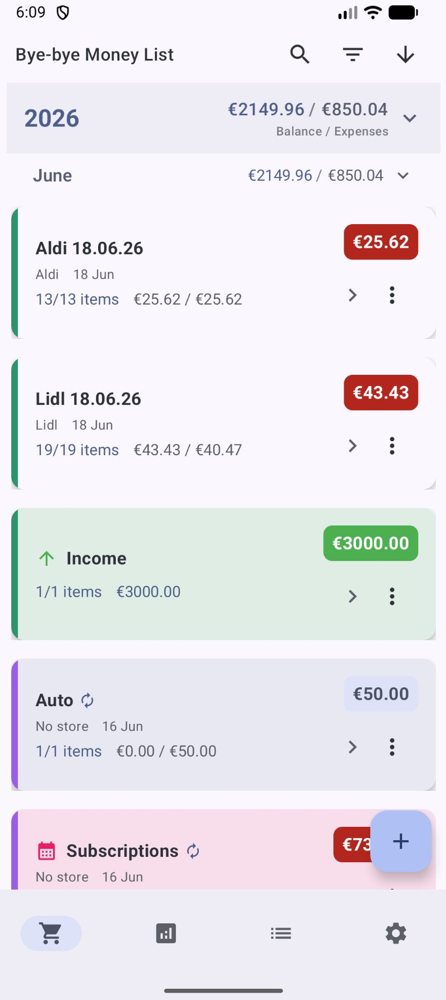
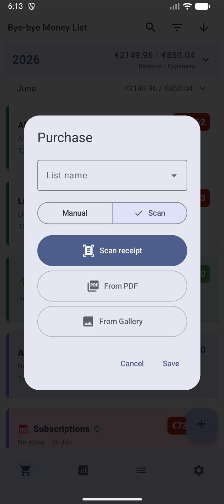
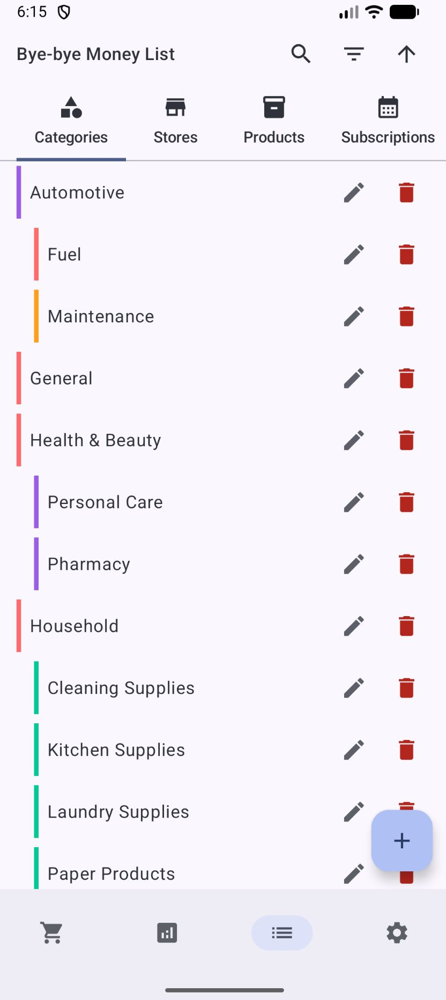
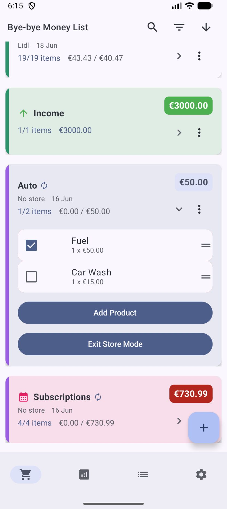
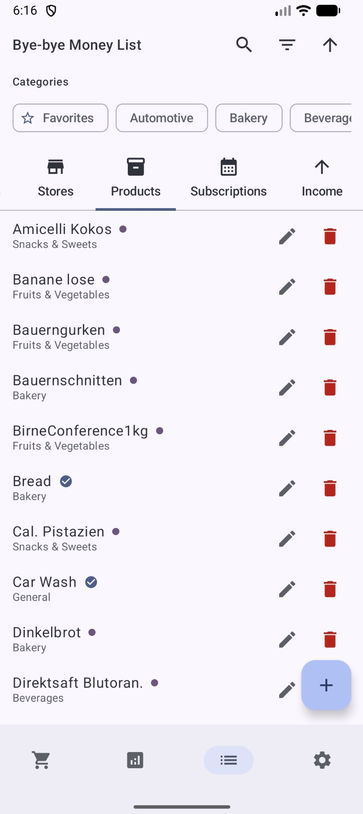
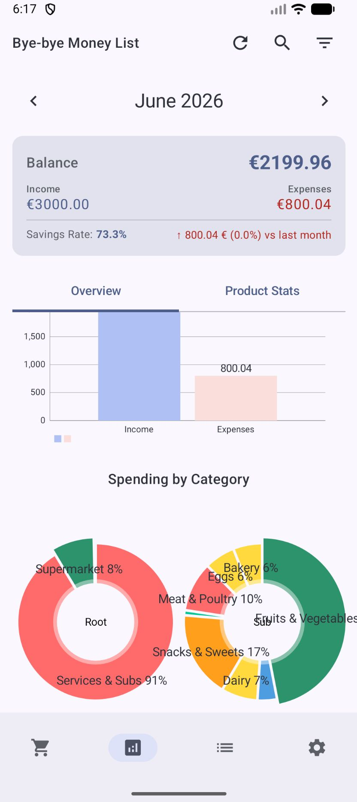

Bye-Bye Money List — це менеджер списків покупок та трекер витрат на базі ШІ, створений для того, щоб надати вам чіткий і детальний огляд ваших фінансів.


"Просто зробіть фото вашого чека."
Оберіть свій улюблений рушій: Google Gemini або Silicon Flow (DeepSeek/Qwen). Додаток автоматично розпізнає кожен товар, ціну та магазин.
ШІ розумно розподіляє товари по ваших власних категоріях і миттєво фіксує місце покупки.
Ми не нав'язуємо вам структуру. Категорії на 100% визначаються користувачем і є ієрархічними.

Плануйте перед походом у магазин. Перемикайтеся в режим "У магазині", щоб відзначати товари в процесі. Додайте список як покупку для автоматичного відстеження історії.

Керуйте власним каталогом товарів. Використовуйте штрих-коди для швидкого пошуку та порівнюйте ціни в різних магазинах.

Переглядайте витрати за категоріями, магазинами або списками. Аналізуйте діаграми, тенденції кількості та історію цін для кожного товару.

Не просто відстежуйте витрати. Реєструйте джерела доходів, щоб отримати збалансоване уявлення про свій місячний бюджет.
Позначайте списки або продукти як підписки. Додаток відстежує ці регулярні витрати окремо, щоб ви ніколи не втрачали з виду свої постійні видатки.